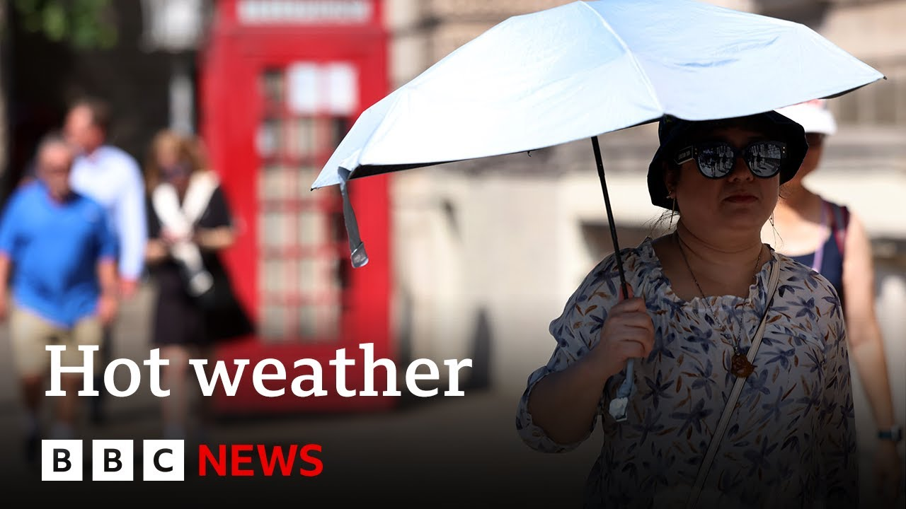

| 标题 | 时长 | 资源链接 | 高考 | 四级 | 六级 | 考研 | 专八 | 雅思 | 托福 | GRE | SAT | 其它生词 |
|---|---|---|---|---|---|---|---|---|---|---|---|---|

|
25:25 | 📄在线文稿 📁离线文稿 📚PDF | 1015 | 752 | 238 | 579 | 19 | 29 | 124 | 99 | 137 | 122 |

|
11:00 | 📄在线文稿 📁离线文稿 📚PDF | 500 | 358 | 98 | 253 | 11 | 18 | 61 | 44 | 62 | 63 |
| 21:12 | 📄在线文稿 📁离线文稿 📚PDF | 903 | 665 | 237 | 535 | 29 | 27 | 139 | 110 | 152 | 108 | |
|  | 7:10 | 📄在线文稿 📁离线文稿 📚PDF | 386 | 247 | 65 | 150 | 1 | 9 | 24 | 18 | 44 | 34 |
| 5:20 | 📄在线文稿 📁离线文稿 📚PDF | 364 | 212 | 45 | 113 | 4 | 8 | 31 | 18 | 40 | 30 | |

|
16:38 | 📄在线文稿 📁离线文稿 📚PDF | 687 | 513 | 132 | 339 | 19 | 14 | 69 | 61 | 101 | 73 |

|
27:38 | 📄在线文稿 📁离线文稿 📚PDF | 950 | 720 | 235 | 549 | 22 | 37 | 132 | 101 | 184 | 113 |